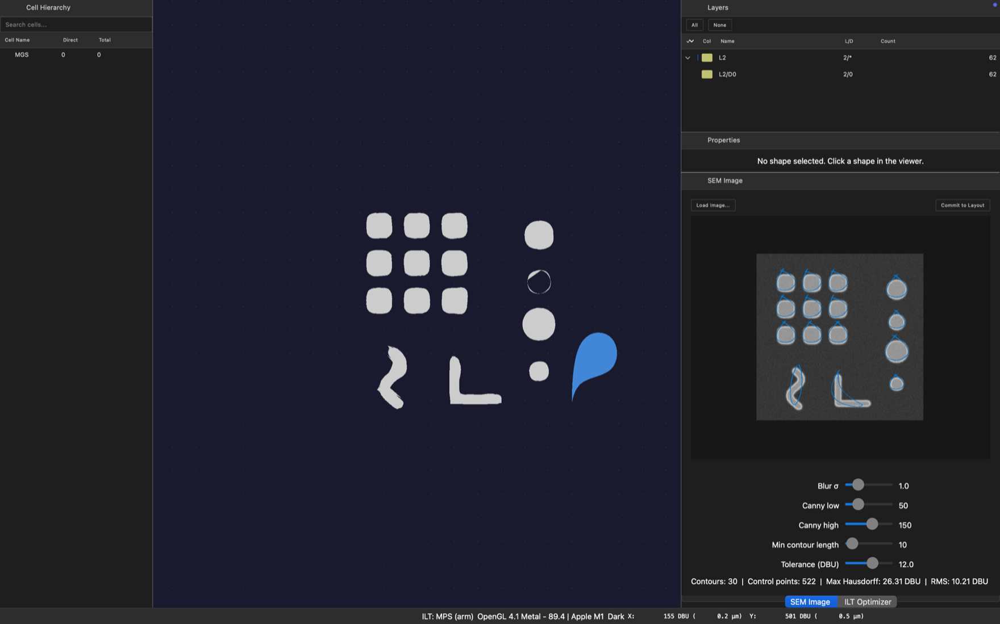
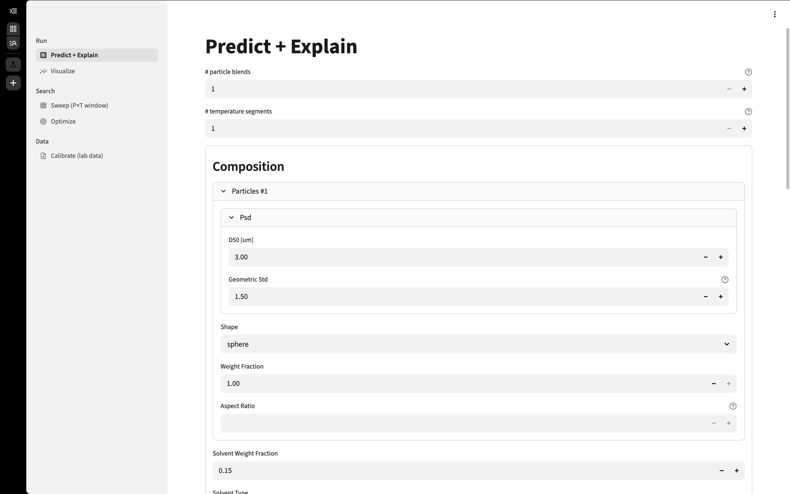
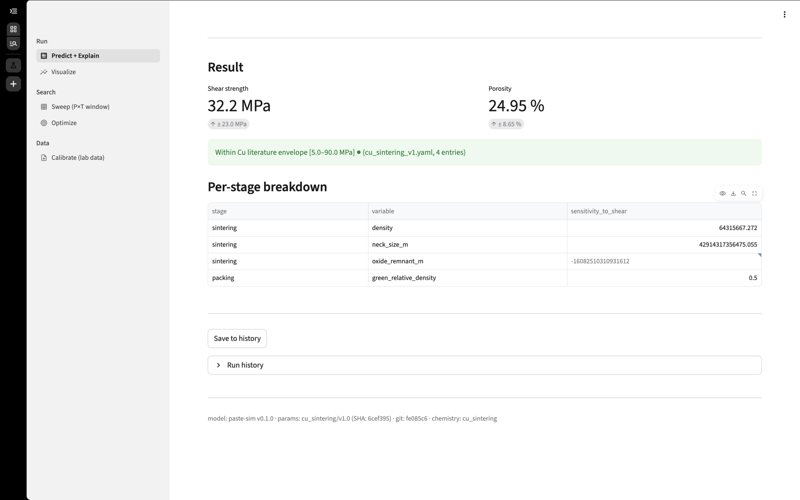

Project 01 · 개인 프로젝트 · 진행 중
OPC Studio단독 설계·구현
리소그래피 OPC/ILT 시뮬레이션 엔진을 AI 멀티에이전트 하네스로 설계·구현 — “어떤 AI를 어떤 구조로 운용할지”를 직접 판단한 사례
문제
회절 광학 모델링, GPU 수치연산, EDA 파일 파싱은 각각 다른 전문 영역이라 한 사람이 순차로 공략하기 어렵습니다. 본업과 병행하며 이 복합 난제를 어떻게 풀 것인가가 핵심이었습니다.
접근
- plan → execute → verify로 역할을 나눈 AI 멀티에이전트 하네스(GSD)를 직접 설계·오케스트레이션 — 현장 난제에 어떤 AI를 어떤 구조로 투입할지 직접 판단·설계
- 물리 엔진을 직접 구현: Hopkins/SOCS 결상(OpenILT 검증 193nm ArF SOCS 커널 기반), 부분 결맞음 결상, PyTorch FFT aerial image(CUDA/Apple MPS 자동 선택), 픽셀 단위 ILT
- OPC SW 아키텍처와 레이아웃(OASIS) 파싱 툴킷까지 엔드투엔드 구성
결과
- “마스크에 무엇을 그려야 웨이퍼에 원하는 모양이 그대로 찍히는가”를 거꾸로 계산하는 엔진을 직접 구현하고, 그 엔진이 실제로 작동함을 수치로 확인
- 목표 도형과 ‘실제로 인쇄될 예측 모양’의 가장자리 어긋남(업계에서 EPE라 부르는 오차)이 최적화를 반복할수록 계속 줄어 안정적으로 수렴 — 256×256 시험 패턴, GPU(Apple MPS)에서 실행
- 업계 표준 시험세트(ICCAD-2013 10-clip)의 성능을 자동으로 채점하는 평가 도구까지 구축
- 본업과 병행해 설계 → 광학 시뮬레이션 → 최적화 → 검증까지 핵심 흐름 전체를 혼자 구현 — 현재도 개선을 이어가는 진행형 프로젝트
ILTHopkins/SOCSPyTorch FFT부분결맞음OASIS 파싱C++/CUDA

OPC Studio 실행 화면 — GPU 레이아웃 뷰어(좌) · SEM 이미지에서 컨투어 추출(우, 522 control points) · ILT 최적화 패널
검증 범위: 시험 패턴에 대한 최적화 수렴과 표준 벤치마크 평가 도구 구축까지 확인했습니다. 공인 벤치마크 “통과”나 양산(fab) 적용은 주장하지 않습니다 — 면접에서 근거와 함께 설명 가능합니다.
Project 02 · 개인 협업 프로젝트
Paste Simulation2인 협업 · SW 개발 리드
Cu 소결 다이-어태치 페이스트의 조성·공정으로 접합강도(shear strength)를 예측하는 물리 기반 시뮬레이터 — 비개발자 동료에게 AI 활용을 직접 전파해 함께 개발, AI를 팀에 확산시킨 사례
문제
소재공학 도메인 지식은 있으나 개발 경험이 없는 동료(소재공학 석사)와 함께, Cu 소결 페이스트의 접합강도를 예측하는 시뮬레이션 SW를 빠르게 만들어야 했습니다.
접근
- SW 개발을 리드하면서, 비개발자 동료에게 AI 활용 방법을 직접 전파해 함께 코드를 작성·개선하는 협업 방식을 구축
- 조성·공정 파라미터 입력 → 물리 기반 예측(Python·Streamlit GUI) → 결과 시각화로 이어지는 워크플로우를 구현하고, 예측값을 실측 데이터로 검증
결과
- 비전문가도 AI로 실제 SW 개발에 기여하는 협업 패턴을 확립 — AI 도입이 개인 역량을 넘어 팀 생산성으로 확산
- 조성·공정 파라미터를 바꿔가며 접합강도 예측을 비교·검증하는 데이터 기반 루프 완성

파라미터 입력 — 입자 조성·입도(PSD)·용매 조건을 설정

결과·검증 — 예측값(Shear strength·Porosity)을 문헌 범위와 대조
AI 페어 개발소재공학(Cu 소결 페이스트)접합강도 예측데이터 검증협업 리드
양산기술로의 전이
이 AI·자동화 운용 능력을 청주 Fab 현장에 적용하겠습니다
AI 도입 판단·설계어떤 AI를 어떤 구조로 운용할지 직접 판단한 방식을, 장비 이벤트·Wafer Loss 데이터 분석과 반복 진단 업무에 적용
자동화 Workflow반복 업무를 자동 Workflow로 제거한 패턴을, 양산기술의 Setup TAT 표준화·비정기 PM 감소에 연결
계측·매칭 사고방식입력→출력 전달함수를 정량화·교정해 온 계측 경험을 TTTM·Setup 장비 품질 확보로 전이
불량 원인분석(RCA)신호 이상을 레지스터 레벨까지 원인 분리한 역량을 장비 고장·공정 불량 분석/개선에 적용